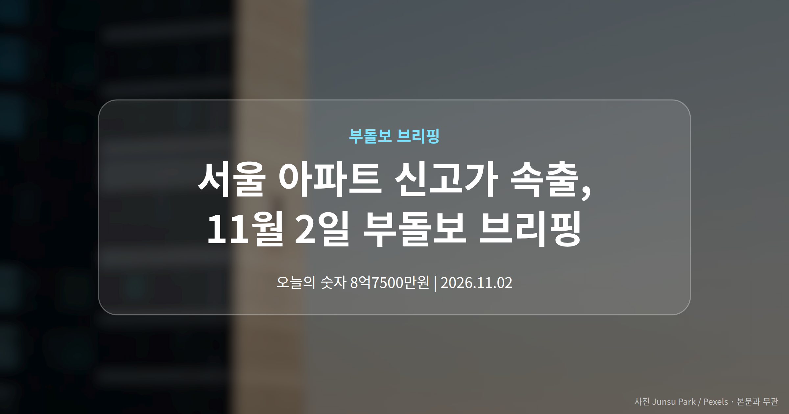
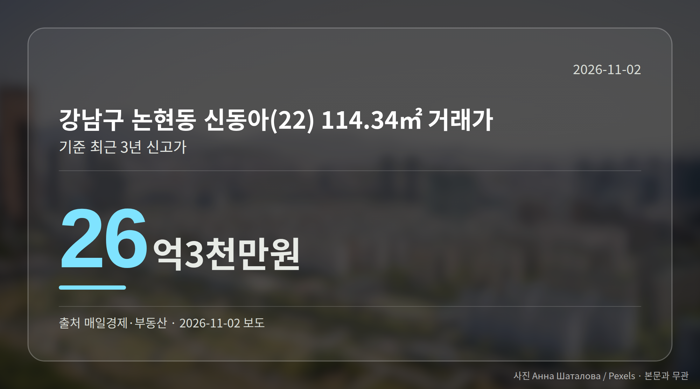
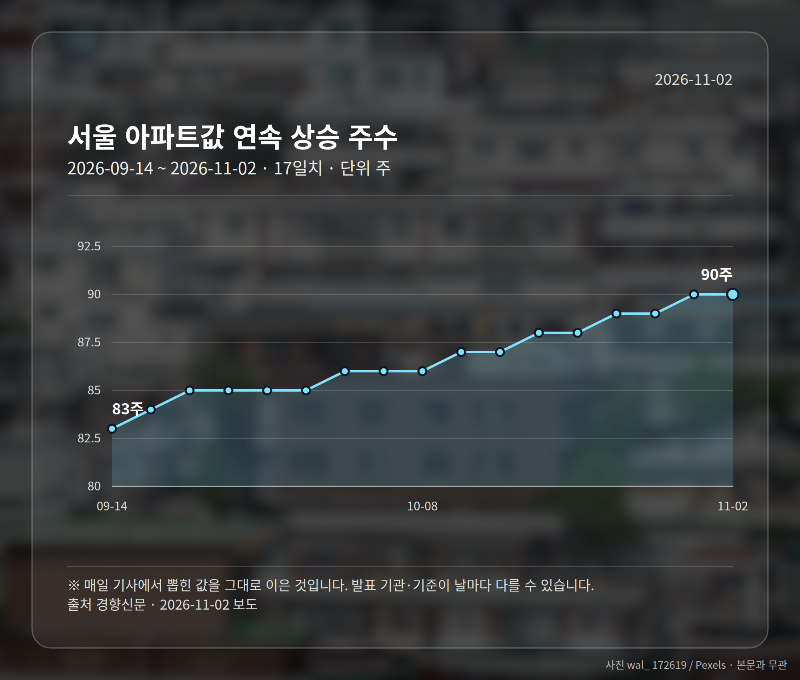
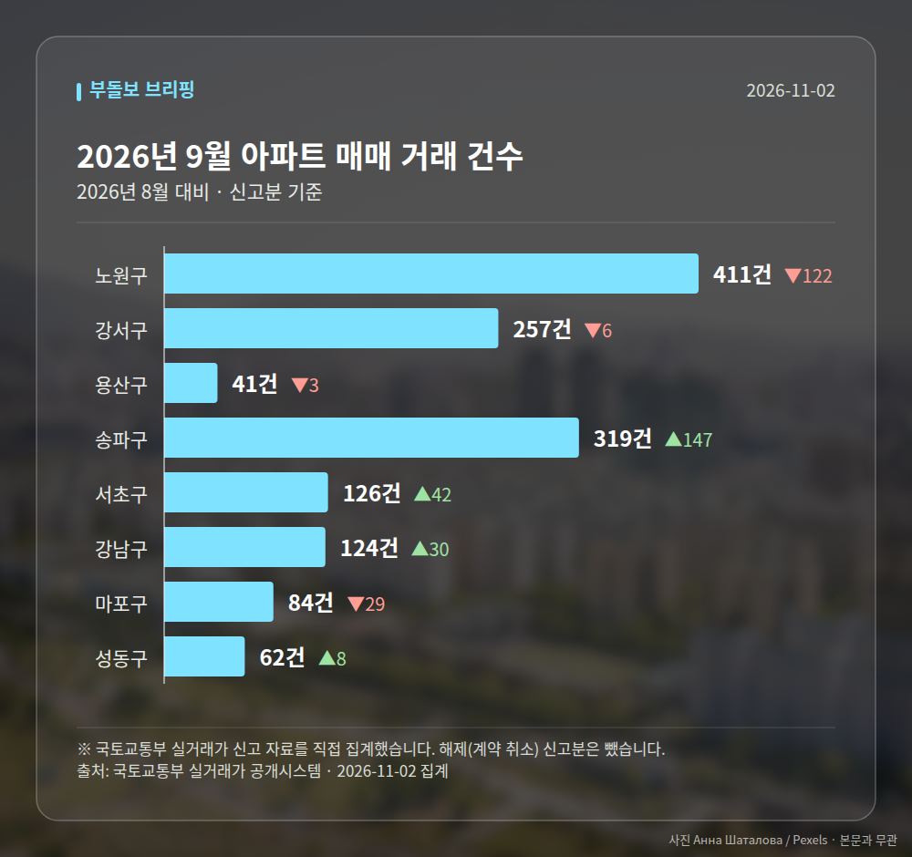

이 글은 2026년 11월 2일 기준으로 정리한 내용입니다. 실거래 수치는 2026년 9월 신고분입니다.
오늘은 서울 아파트 신고가 소식이 가장 눈에 띕니다. 은평·관악·강서·강남·노원·구로, 여섯 개 자치구에서 최근 3년 신고가 거래가 한꺼번에 포착됐습니다.
서울 아파트값이 90주째 오름세를 이어가는 흐름과 맞물린 결과로 읽힙니다. 다만 건별 거래라 구 전체 시세로 보기는 어렵습니다.

이번에 확인된 거래는 강남권과 강북권, 서남권을 가로지릅니다. 전용면적과 가격을 함께 보시면 체감이 다르실 겁니다.
| 자치구·단지 | 전용면적 | 거래가 |
|---|---|---|
| 강남 논현동 신동아(22) | 114.34㎡ | 26억3000만원 |
| 관악 봉천동 두산 | 59.92㎡ | 13억4500만원 |
| 구로 개봉동현대아이파크 | 84.98㎡ | 12억2800만원 |
| 강서 마곡수명산파크4단지 | 59.84㎡ | 12억1000만원 |
| 은평 신사동 미성 | 83.27㎡ | 8억7500만원 |
| 노원 시영3차(라이프) | 39.6㎡ | 5억2000만원 |
모두 '최근 3년 신고가'입니다. 3년 안에 체결된 거래 중 가장 높은 값이라는 뜻이고, 역대 최고가와는 다른 개념입니다.
한 지역에 몰린 게 아니라는 점이 핵심입니다. 매일경제 보도는 이를 서울 전역에서 매수 심리가 살아 있는 신호로 해석했습니다.
다만 각 건은 개별 사례일 수 있습니다. 단지 특성이나 거래 조건에 따라 유독 높게 찍히는 경우가 있어서요.
실제로 이번 보도에는 거래일자, 층수, 직전 거래가가 담기지 않았습니다. 같은 단지라도 층과 향에 따라 수억원이 갈리니, 여러분이 관심 단지를 보실 때는 실거래가 공개시스템에서 직전 거래와 나란히 놓고 비교하시는 편이 안전합니다.
경향신문은 서울 아파트값이 90주 연속 올랐고, 전월세도 7~8% 뛰었다고 전했습니다. 사는 쪽과 빌리는 쪽 부담이 함께 커진 셈입니다.

이 가운데 대통령은 '자산시장 정상화, 인내의 시간'이라는 취지로 말했습니다. 단기 하락을 유도하기보다 장기 정상화를 지향한다는 기조로 읽히는 발언입니다. 다만 발언 전문과 일시는 제목 수준으로만 확인됩니다.
서울 8개 구에서 신고된 매매는 1424건입니다. 2026년 8월 1357건과 견주면 +67건입니다.
거래가 많은 곳: 노원구 411건(-122) · 강서구 257건(-6) · 용산구 41건(-3)
노원구 전세가율(전세 보증금 ÷ 매매가)은 가운뎃값 52.5%입니다. 같은 단지·같은 면적 90곳을 견줬습니다.
서울 25개 구 가운데 거래가 가장 크게 움직인 곳: 송파구 +85.5%(172→319건, 장지동에 59.2% 몰림) · 서초구 +50.0%(84→126건)
2026년 10월 계약 신고가

→ 그림 파일 img-stats-volume.png 을 이 자리에 올리세요
국토교통부 실거래가 신고 자료를 직접 집계했습니다. 해제(계약 취소) 신고분은 뺐습니다.
여러분이 보고 계신 단지는 올해 들어 거래가가 어떻게 움직였나요?
댓글로 알려 주시면 다음 글에 반영하겠습니다.